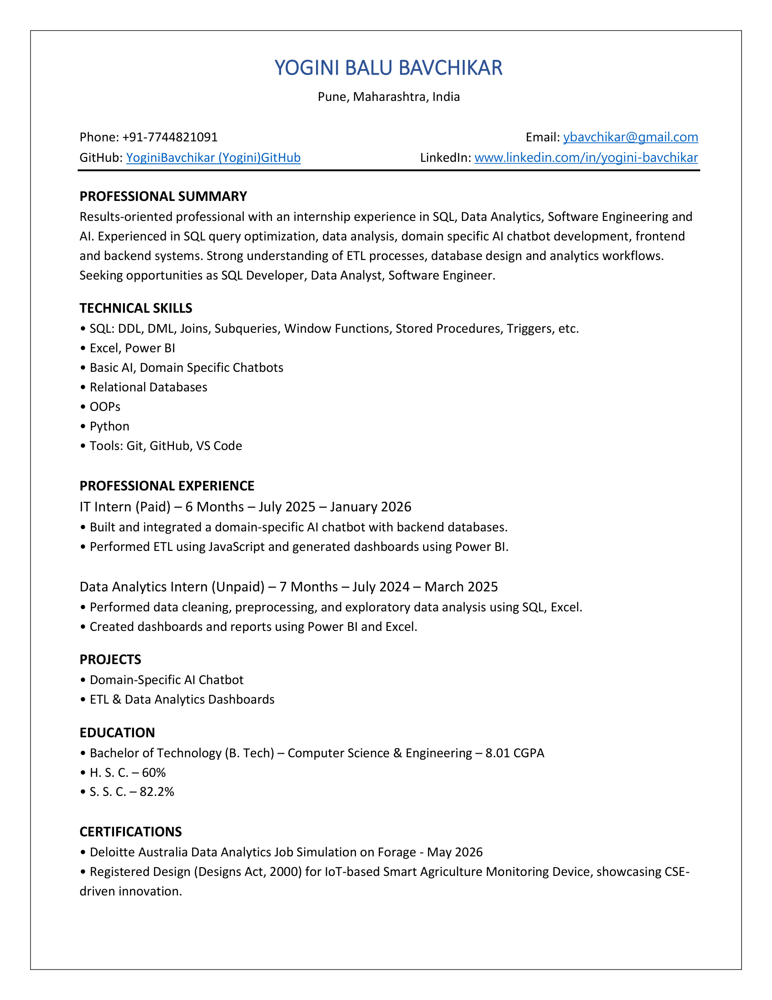

Results-oriented professional with an internship experience in SQL, Data Analytics, Software Engineering and AI. Experienced in SQL query optimization, data analysis, domain specific AI chatbot development, frontend and backend systems. Seeking opportunities as SQL Developer, Data Analyst, Software Engineer.

Developed an intelligent chatbot for querying gate pass data, including entry/exit logs, employee/vendor details, and login activities. Built using React (frontend) and Node.js with Express (backend), integrated with Google Gemini for natural language understanding. The system converts user queries into SQL, retrieves relevant data from the database, and delivers accurate responses in human-readable format, enabling efficient and secure data access within a restricted domain.
Designed and implemented an end-to-end ETL pipeline by extracting industrial project data from SAP and engineering sources, followed by data cleaning and transformation. Consolidated the processed data into a master Excel dataset, which was further utilized to build an interactive Power BI dashboard and a domain-specific chatbot, enabling efficient data analysis and intelligent query handling.
Developed an interactive sales dashboard using Microsoft Power BI to analyze product performance, regional trends, and discount impact on profitability. Performed data cleaning in Excel and applied DAX for advanced calculations. The dashboard highlights key metrics such as total sales, category-wise performance, and city-level profit analysis, enabling stakeholders to identify high-performing products, evaluate discount strategies, and make data-driven decisions.
Analysed Uber ride data using Python (Jupyter Notebook) for data cleaning, preprocessing, and exploratory analysis, followed by interactive dashboard development in Microsoft Power BI. Identified ride patterns across hours, weekdays, and base locations, and visualized geographic pickup trends. Delivered insights through dynamic dashboards with filters, enabling efficient exploration of ride distribution and operational trends.